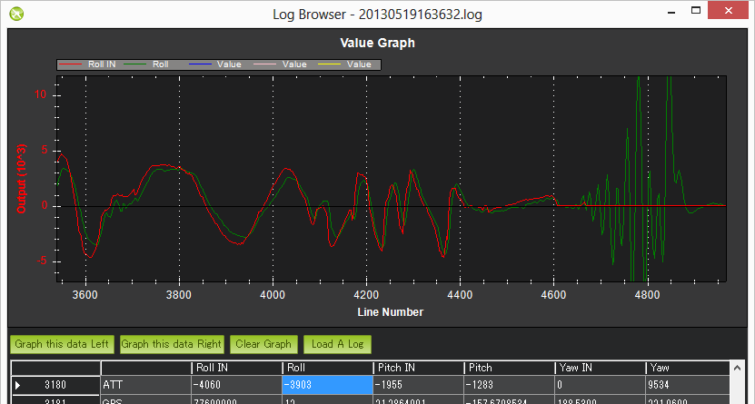
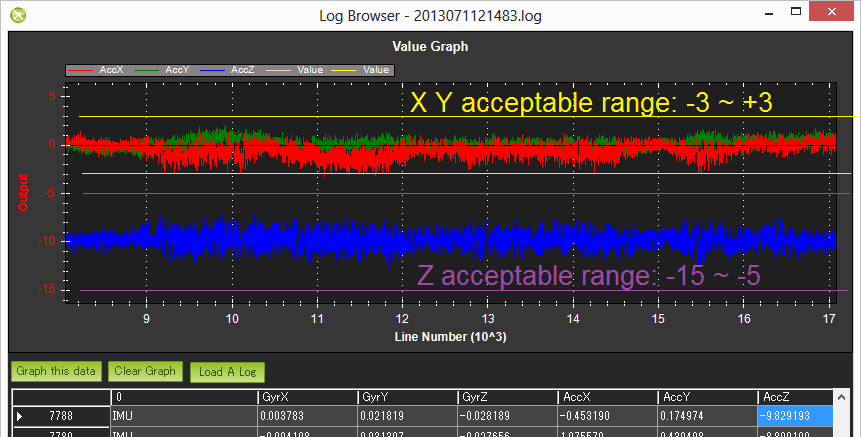
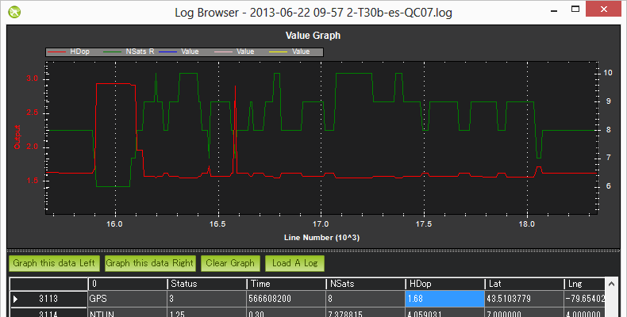
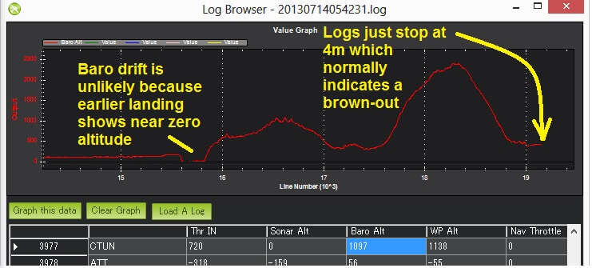
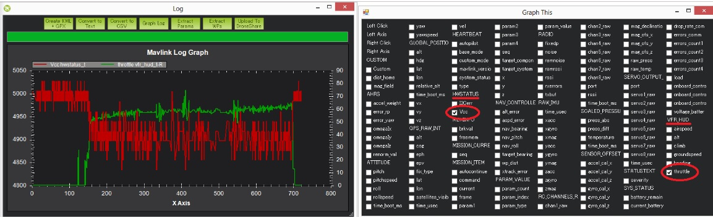
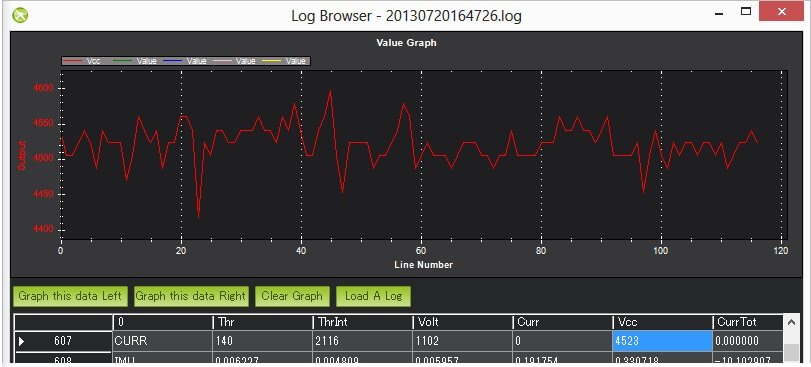
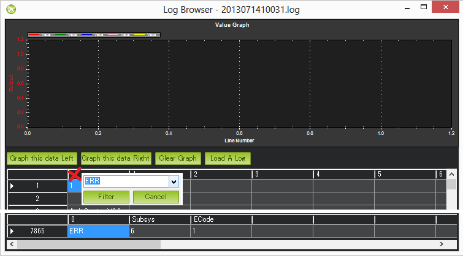

使用日志诊断硬件问题
本章节目的是教你使用日志诊断分析常见的5种直接影响飞行器效果的问题
机械故障：
常见的机械硬件故障包括电机、电调失效（或者不同步）、螺旋桨打滑或者脱落等
这些故障在日志中的表现是，期望的（vehicle's）横滚与俯仰轴与实际的横滚与俯仰轴突然的发散
这种差异可以对比ATT消息的Roll-in vs Roll 和Pitch-in 和Pitch以及NavYaw和Yaw，很容易看的出来。

在上图示例中，飞行器的实际横滚（ROLL）与期望横滚值（ROLL IN）刚开始的时候比较接近，但随后突然发散。飞控板希望控制ROLL IN为水平，实际ROLL值已经无法控制，这一般是一个硬件故障（ESC或者马达、螺旋桨失控），这与软件故障非常不同，如果是软件故障，比如参数不适合导致的严重震荡，ROLL IN和实际的ROLL应该会接近。
振动问题：
因为飞行器的姿态和高度估算严重依赖着加速计，如果严重的震动，会导致定高不稳或者定点悬停飘逸等问题，严重的还会导致高度上下串。
通过闪存日志分析IMU消息中的AccX、AccY和AccZ值，既可了解飞行器震动是否达标或者超标
理想震动范围应该是AccX、AccY 在-3~+3 M/S/S的范围，而AccZ理想值是-15 ~ -5M/S/S
查看振动值，应该从一段平稳飞行的日志中提取分析，因为加速计数值会随着飞行器的上下移动而瞬间改变
振动看起来就好像草坪的草一样。要以一个持续的"草"波形去判断是否在合理范围内

电子指南针（电子罗盘/compass）干扰：
如果电子罗盘被干扰，会直接导致飞行器在依赖电子罗盘的飞行模式（AUTO/LOITER/RTL等）出现自旋、刷马桶效应甚至往一个错误的方向飞行
干扰电子罗盘被干扰的因素很多，比如飞行器内部的：配电板、电调、电机、电源走线、电池等
GPS故障
在自动模式下（AUTO\LOITER\RTL）GPS异常会导致突然飞行一个错误的位置或者来回飘逸
GPS异常一般包括:丢星或者卫星数量突然减少
在闪存日志中，可以很直观的看见卫星数量NSats的减少和HDOP 精度精度 变大
NSats 卫星数量 越多越准确
HDOP 水平（平面）位置精度因子 越小越准确

电源故障
闪存日志中体现为日志结束时直升机还在半空中。（导航高度与气压计测量高度等高度指远高于零）。
图像曲线：
Dataflash(闪存）日志CTUN消息的气压Alt
Dataflash日志的GPS信息的RelAlt(结合加速度计+ 气压计高度估计)
Tlog VFR_HUD alt(结合加速度计+气压高度 估计)
Tlog的GLOBAL_POSITION relative_alt

电路板电压的变化也可能是电源问题的征兆。 主板电压在4.7~5.3v且跳动小于0.15v是正常的。如果超出这个范围，可能是与飞控共享电源的设备导致电源中的异常，从而导致电压拉低或其他奇怪的行为。 可以使用以下方式绘制电路板电压：
Dataflash CURRENT消息的VCC
Tlog HWSTATUS的Vcc

其他意想不到的错误及故障保护

当飞行器出现了意想不到的错误，可能会触发对应的故障保护
ERR(错误信息代号)
下面列出：子系统及错误代码
1：Main(从未使用)
2：无线电（Radio）
ECode 1：“Late Frame”意思是APM的板载ppm编码器，至少2秒钟了没有更新数据。
ECode 0：意思是ppm编码器恢复数据更新，错误已解决。
3：Compass（罗盘）
ECode 1：罗盘初始化失败(很可能是硬件问题)
ECode 2：从罗盘读取数据失败（可能是硬件问题）
ECode：上述错误已解决
4：Optical flow（光流）
ECode 1：初始化失败(很可能是硬件问题)
5：油门安全故障
ECode 1：油门下降到参数FS_THR_VALUE以下,可能 数传 RX/TX失去连接
ECode 0：上述问题解决，意思是 数传 RX/TX恢复连接
6：电池安全故障
ECode 1：电池电压低于参数LOW_VOLT，或电池过度放电能力超过参数BATT_CAPACITY
7：GPS安全故障
ECode 1：GPS断开锁定至少5秒钟
ECode 0：GPS恢复锁定
8：GCS(地面站)安全故障
ECode 1：地面站的操纵杆，至少5秒钟未变化。
ECode 0：恢复地面站的更新
9：围栏
ECode 1：超过限定电子围栏高度
ECode 2：超过限定电子围栏范围
ECode 3：超过限定海拔高度和围栏范围
ECode 1：飞行器回到限定范围内
10：飞行模式
ECode 0 – 10：飞行器不能进入想要的飞行模式
（0 = 自稳，1 = 特技，2 = 定高，3 = 自动，4 = 导航，5 = 悬停，6 = 返航，7 = 盘旋，8 = 定位，9 = 着陆，10 = 光流—悬停）
11：GPS
ECode 2：GPS故障
ECode 0：GPS已故障清除
12：撞击检查
ECode 1：检测到撞击